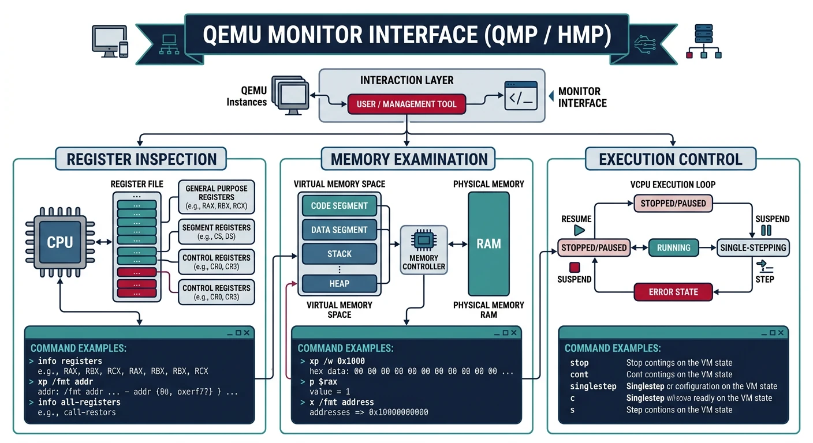
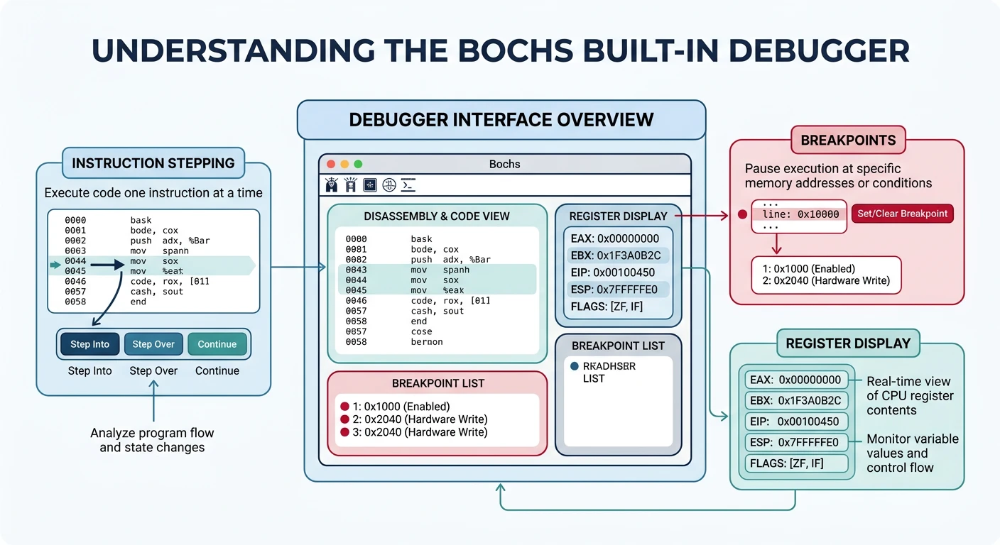
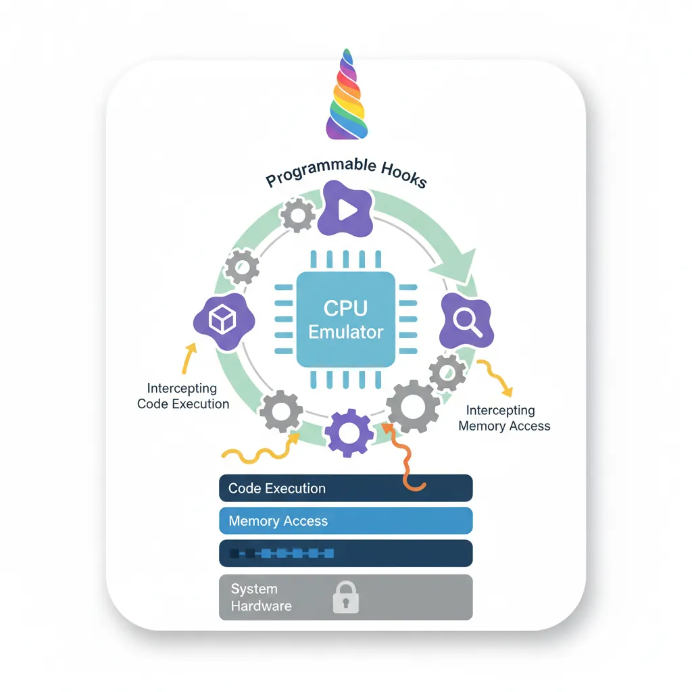
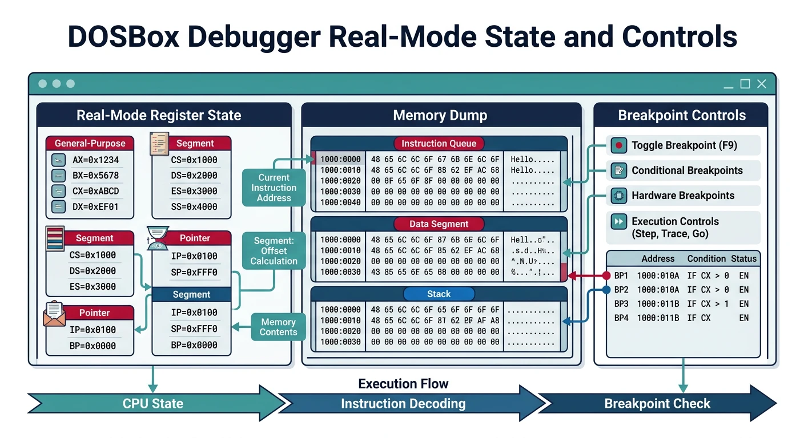
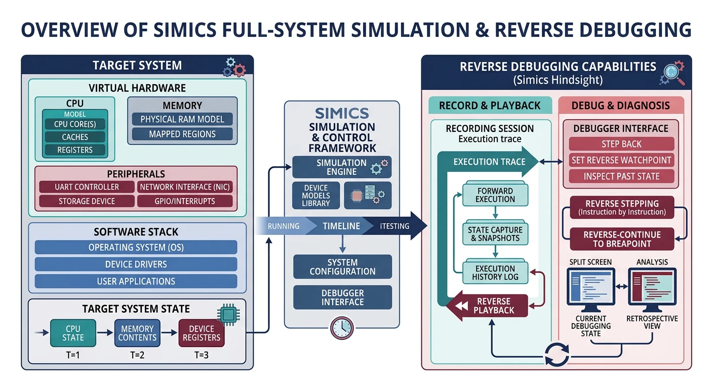

x86 Assembly Series Part 21: Complete Emulator & Simulator Guide
February 6, 2026Wasil Zafar45 min read
Master x86 emulators and simulators for assembly development: QEMU for general OS testing, Bochs for instruction correctness, gem5 for CPU research, Unicorn for security analysis, Valgrind for memory debugging, DOSBox for real-mode, and Simics for enterprise hardware.
Understanding the difference: Emulators mimic hardware behavior to run software, while simulators model system behavior for analysis. Some tools (like gem5) are true simulators; others (like QEMU) are emulators that can also use hardware virtualization.
General bootloader/kernel development: Start with QEMU for fast iteration
Debugging instruction-level bugs: Use Bochs for cycle-accurate behavior
CPU microarchitecture research: Use gem5 for detailed simulation
Security research & CTF: Use Unicorn for quick shellcode emulation
Memory bug hunting: Use Valgrind to catch leaks and invalid accesses
DOS/16-bit real-mode: Use DOSBox for legacy software
Enterprise firmware development: Consider Simics for full-system simulation
QEMU — General-Purpose Emulator
QEMU (Quick Emulator) is the most popular choice for OS development. It supports full system emulation, user-mode emulation, and can leverage KVM for near-native performance on Linux.
Installation & Basics
# Install QEMU (Ubuntu/Debian)
sudo apt install qemu-system-x86 qemu-utils
# Install QEMU (Windows - use MSYS2 or official installer)
# Download from: https://www.qemu.org/download/
# Basic invocation for boot sector
qemu-system-x86_64 -drive format=raw,file=boot.bin
# With debugging enabled (-s: GDB on :1234, -S: freeze at startup)
qemu-system-x86_64 -drive format=raw,file=boot.bin -s -S
# Run 32-bit system
qemu-system-i386 -drive format=raw,file=boot.bin
# Run with floppy drive emulation
qemu-system-i386 -fda boot.bin
# Run kernel with multiboot
qemu-system-i386 -kernel kernel.bin
GDB Remote Debugging
# Terminal 1: Start QEMU with GDB stub
qemu-system-x86_64 -drive format=raw,file=boot.bin -s -S
# Terminal 2: Connect GDB
gdb
(gdb) target remote localhost:1234
(gdb) set architecture i8086 # For 16-bit real mode
(gdb) break *0x7c00 # Break at boot sector load address
(gdb) continue
(gdb) x/20i $eip # Disassemble 20 instructions
(gdb) info registers # View all registers
(gdb) stepi # Single-step instruction
QEMU Monitor Commands
Press Ctrl+Alt+2 to access the QEMU monitor (or use -monitor stdio):

Figure: QEMU monitor – interactive debug console for register inspection, physical memory examination, and emulation control.
# Common monitor commands
info registers # Display CPU registers
info cpus # Show CPU state
info mem # Show virtual memory mappings
info tlb # Show TLB entries
xp /20xw 0x7c00 # Examine physical memory (20 words at 0x7c00)
x /20i 0x7c00 # Disassemble from address
memsave 0 0x100000 dump.bin # Save memory to file
stop # Pause emulation
cont # Continue emulation
system_reset # Reset the system
quit # Exit QEMU
Disk Images & Hardware Configuration
# Create disk images
qemu-img create -f raw disk.img 512M # Raw format
qemu-img create -f qcow2 disk.qcow2 10G # QCOW2 (sparse, snapshots)
# Memory and CPU configuration
qemu-system-x86_64 -m 512M -smp 2 -drive format=raw,file=boot.bin
# Enable hardware acceleration (Linux KVM)
qemu-system-x86_64 -enable-kvm -m 2G -drive format=raw,file=boot.bin
# Serial output to terminal
qemu-system-i386 -nographic -serial mon:stdio -drive format=raw,file=boot.bin
# Network configuration
qemu-system-x86_64 -netdev user,id=net0 -device e1000,netdev=net0
Bochs — Instruction-Accurate Emulator
Bochs is a highly portable x86 PC emulator focused on correctness over speed. It emulates every instruction cycle-by-cycle, making it invaluable for debugging subtle CPU bugs that QEMU might miss.
Bochs has a powerful integrated debugger. Compile with --enable-debugger or use bochs-dbg:

Figure: Bochs debugger – cycle-accurate instruction stepping with breakpoints, register views, and memory inspection for precise CPU behavior analysis.
# Bochs debugger commands
b 0x7c00 # Set breakpoint at address
c # Continue execution
s # Single step
n # Step over (next)
r # Show registers
sreg # Show segment registers
creg # Show control registers
u 0x7c00 0x7c20 # Disassemble range
x /40bx 0x7c00 # Examine 40 bytes at address
xp /20 0x7c00 # Examine physical memory
trace-on # Enable instruction trace
watch read 0x7c00 # Watch memory reads
watch write 0x7c00 # Watch memory writes
info break # List breakpoints
del 1 # Delete breakpoint 1
q # Quit
When to use Bochs over QEMU: Use Bochs when you suspect instruction timing issues, need to verify exact CPU flag behavior, or when debugging code that works in QEMU but fails on real hardware.
gem5 — CPU Research Simulator
gem5 is a modular computer system simulator used for CPU architecture research. It models cache hierarchies, pipeline stages, and memory systems in extreme detail.
Architecture & Installation
# Clone gem5 repository
git clone https://gem5.googlesource.com/public/gem5
cd gem5
# Install dependencies (Ubuntu)
sudo apt install build-essential git m4 scons zlib1g-dev \
libprotobuf-dev protobuf-compiler libgoogle-perftools-dev
# Build gem5 for x86 (takes 30+ minutes)
scons build/X86/gem5.opt -j$(nproc)
# Run simple x86 simulation
./build/X86/gem5.opt configs/example/se.py --cmd=tests/test-progs/hello/bin/x86/linux/hello
Simulation Modes
SE (Syscall Emulation): Run user-space binaries without OS
FS (Full System): Boot complete operating system
# gem5 configuration script example
import m5
from m5.objects import *
system = System()
system.clk_domain = SrcClockDomain()
system.clk_domain.clock = '1GHz'
system.mem_mode = 'timing'
system.mem_ranges = [AddrRange('512MB')]
# Create CPU
system.cpu = TimingSimpleCPU()
# Memory system
system.membus = SystemXBar()
system.cpu.icache_port = system.membus.cpu_side_ports
system.cpu.dcache_port = system.membus.cpu_side_ports
# Run simulation
root = Root(full_system=False, system=system)
m5.instantiate()
m5.simulate()
Research Applications: gem5 is used to study branch prediction, cache replacement policies, out-of-order execution, and speculative execution vulnerabilities like Spectre.
Unicorn Engine — Security Framework
Unicorn is a lightweight CPU emulator framework based on QEMU's CPU emulation core. It provides a simple API for running arbitrary machine code, making it ideal for security research and reverse engineering.

Figure: Unicorn Engine architecture – lightweight CPU emulator with programmable hooks for intercepting code execution and memory access events.
# Python example: Emulate x86 code
from unicorn import *
from unicorn.x86_const import *
# Machine code: INC ECX; DEC EDX
X86_CODE32 = b"\x41\x4a"
# Memory address where emulation starts
ADDRESS = 0x1000000
# Initialize emulator in x86-32 mode
mu = Uc(UC_ARCH_X86, UC_MODE_32)
# Map 2MB memory for this emulation
mu.mem_map(ADDRESS, 2 * 1024 * 1024)
# Write machine code to memory
mu.mem_write(ADDRESS, X86_CODE32)
# Initialize registers
mu.reg_write(UC_X86_REG_ECX, 0x1234)
mu.reg_write(UC_X86_REG_EDX, 0x7890)
# Emulate code
mu.emu_start(ADDRESS, ADDRESS + len(X86_CODE32))
# Read registers after emulation
print("ECX = 0x%x" % mu.reg_read(UC_X86_REG_ECX)) # 0x1235
print("EDX = 0x%x" % mu.reg_read(UC_X86_REG_EDX)) # 0x788f
Shellcode Analysis
# Emulate shellcode with hooks
from unicorn import *
from unicorn.x86_const import *
def hook_code(uc, address, size, user_data):
print(">>> Executing at 0x%x, instruction size = %d" % (address, size))
def hook_mem_access(uc, access, address, size, value, user_data):
if access == UC_MEM_WRITE:
print(">>> Memory WRITE at 0x%x, size = %d, value = 0x%x" % (address, size, value))
else:
print(">>> Memory READ at 0x%x, size = %d" % (address, size))
# Initialize emulator in x86-64 mode
mu = Uc(UC_ARCH_X86, UC_MODE_64)
mu.mem_map(0x1000, 0x4000)
# Load shellcode
shellcode = b"\x48\x31\xc0\x48\x89\xc7\x48\x89\xc6\x48\x89\xc2"
mu.mem_write(0x1000, shellcode)
# Set up stack
mu.reg_write(UC_X86_REG_RSP, 0x3000)
# Add hooks
mu.hook_add(UC_HOOK_CODE, hook_code)
mu.hook_add(UC_HOOK_MEM_READ | UC_HOOK_MEM_WRITE, hook_mem_access)
# Emulate
try:
mu.emu_start(0x1000, 0x1000 + len(shellcode))
except UcError as e:
print("Error: %s" % e)
Valgrind — Memory Debugger
Valgrind is a dynamic analysis framework that runs programs in a virtual CPU. Its Memcheck tool detects memory errors, leaks, and undefined behavior at the instruction level.
Memcheck for Assembly
# Install Valgrind
sudo apt install valgrind
# Run program with Memcheck
valgrind --leak-check=full ./my_asm_program
# Track origins of uninitialized values
valgrind --track-origins=yes ./my_asm_program
# Generate detailed suppressions
valgrind --gen-suppressions=all ./my_asm_program
# Check for invalid memory access
valgrind --tool=memcheck --trace-children=yes ./my_program
Assembly-Specific Usage
; Example: Code that Valgrind will catch
section .data
buffer: times 10 db 0
section .text
global _start
_start:
; Valgrind catches: reading uninitialized memory
mov eax, [buffer + 20] ; Read beyond allocated buffer!
; Valgrind catches: memory leak if we exit without freeing
mov eax, 12 ; sys_brk
xor ebx, ebx
int 0x80
; Exit
mov eax, 1
xor ebx, ebx
int 0x80
# Valgrind output example
==12345== Invalid read of size 4
==12345== at 0x401000: _start (program.asm:10)
==12345== Address 0x404014 is 0 bytes after a block of size 10 alloc'd
==12345== at 0x401000: _start (program.asm:6)
# Other Valgrind tools
valgrind --tool=cachegrind ./program # Cache profiling
valgrind --tool=callgrind ./program # Call graph profiling
valgrind --tool=helgrind ./program # Thread error detection
DOSBox — Real-Mode & DOS Emulator
DOSBox emulates an IBM PC compatible machine running DOS. It's perfect for testing 16-bit real-mode assembly, BIOS interrupts, and legacy DOS programs.
Real-Mode Testing
# Install DOSBox
sudo apt install dosbox
# Run DOSBox
dosbox
# Mount directory as C: drive
MOUNT C /path/to/asm/programs
C:
# Assemble and run COM file (NASM in DOSBox or pre-assembled)
program.com
; hello.asm - 16-bit DOS COM program
org 100h
section .text
mov ah, 09h ; DOS print string function
mov dx, message ; Address of string
int 21h ; Call DOS interrupt
mov ax, 4C00h ; DOS exit function
int 21h ; Exit with code 0
section .data
message db 'Hello from real mode!$'
# Assemble for DOS COM format (on Linux)
nasm -f bin hello.asm -o hello.com
# Copy to DOSBox directory and run
# In DOSBox: hello.com
DOSBox Debug Commands
Use DOSBox-X or DOSBox with debug build for built-in debugger:

Figure: DOSBox debug mode – breakpoints, register modification, and memory dumps for testing 16-bit real-mode assembly and DOS interrupts.
# DOSBox debugger commands (press Alt+Pause)
bp 0100 # Breakpoint at CS:0100
bpint 21 # Break on INT 21h
r # Display registers
d 0100 # Dump memory at offset 0100
u 0100 # Unassemble at offset 0100
t # Trace (single step)
p # Proceed (step over INT/CALL)
g # Go (continue execution)
sm 0100 48 # Set memory byte at 0100 to 0x48
sr ax 1234 # Set AX register to 0x1234
log # Toggle logging
memdump 0 FFFF # Dump memory range
When to use DOSBox: Learning BIOS interrupts (INT 10h, 13h, 16h), DOS API (INT 21h), real-mode segmentation, or running vintage software and games.
Simics — Enterprise Full-System Simulator
Intel Simics (formerly Wind River Simics) is a commercial full-system simulator used for enterprise firmware development, hardware bring-up, and complex system debugging.
Deterministic execution: Exact reproducibility of bugs
Reverse debugging: Step backwards in time
Checkpoint/restore: Save and reload system state
Multi-core support: Simulate complex SoCs
Enterprise Features
# Simics CLI example (simplified)
# Note: Actual Simics requires commercial license
# Load target configuration
simics> run-command-file targets/x86-simple/x86-simple.simics
# Set breakpoint on memory access
simics> break-mem 0x7c00 -r -w
# Run simulation
simics> run
# Time travel debugging
simics> reverse
simics> backstep
# Create checkpoint
simics> save-persistent-state checkpoint1
# Memory inspection
simics> x 0x7c00 100
# Register inspection
simics> print-cpu-registers
Enterprise Use Cases: BIOS/UEFI development, device driver testing before hardware exists, security vulnerability research on complex systems, automotive ECU simulation.
Alternatives for hobbyists:

Figure: Simics ecosystem – enterprise full-system simulation with deterministic replay, reverse debugging, and multi-core SoC modeling.
Pro Tip: Many developers use QEMU for daily development (fast), then validate on Bochs when something doesn't work (accurate). For security research, pair Unicorn with radare2 or Ghidra for comprehensive analysis.